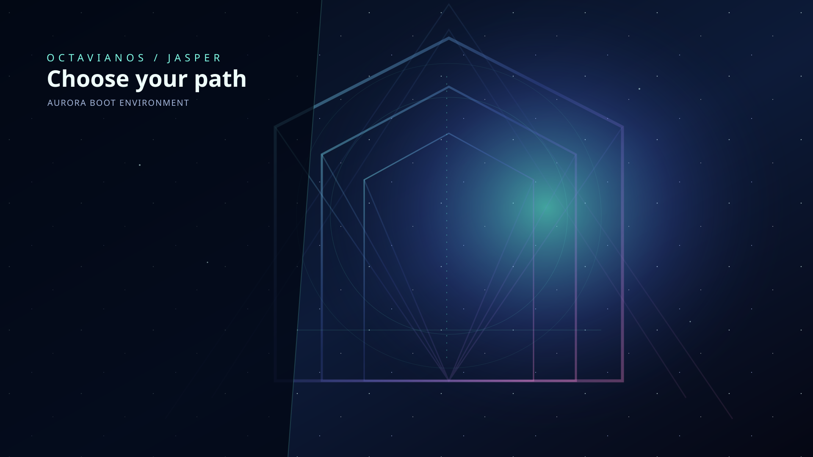

Jasper — The Seven Gates
Portal geometry with a dark text-safe panel for Live, Installer, Recovery, and Diagnostics entries.
Open original SVGKORONOS · PRODUCTION GATE
Live · Installer · Recovery · BIOS / UEFI
CROSS-REPOSITORY STATUS · UPDATED 2026-10-19
Latest completed OctavianOS native run #319: kernel/ISO construction and target-routing smoke passed; the unchanged CPL3 init verifier failed for all three targets, and prerelease publication was skipped. The Web UI catalog validation run #178 passed, but the associated Pages deployment run #543 was cancelled; a successful validation run does not prove a successful deployment.
Live init: FAIL · Installer init: FAIL · Recovery init: FAIL · six BIOS/UEFI cases: NOT ACCEPTED · Aurora-after-init / installer completion / real recovery / AP-backed SMP: NOT VERIFIED · production release: BLOCKED.
Tracking: Chimera runtime issue #112 · Octavian runtime issue #47 · Chimera PR #147 · Octavian PR #68. Both PRs remain draft. The shell-init/initramfs versus ET_EXEC loader mismatch and missing process-owned address spaces, CPL3 transition, process-aware syscalls/exit, and AP-backed scheduling remain implementation blockers.
FAIL-CLOSED STATUS
The kernel build can pass while production init still fails to execute. This page deliberately distinguishes kernel readiness from a real ring-3 init process and does not treat generated or kernel-authored readiness messages as proof.
Inspect latest completed native verification run #319 (acceptance failed) Review fail-closed syscall correction
LATEST ACCEPTANCE · 2026-10-19
Run 39191671975 built Koronos and the ISO candidate successfully. The unchanged production verifier again failed Live, Installer, and Recovery because each trace lacks a user-originated CPL 3 syscall acknowledgement and a matching real-PID readiness marker. The prerelease job was skipped. The native build succeeded, but the same workflow’s unchanged production verifier failed all three targets and skipped prerelease. Source-integration CI #264 passed. Neither a successful compile nor source integration is production userspace acceptance.
The production payload audit found a concrete mismatch: Live and Recovery initramfs builders write a POSIX shell /init plus BusyBox; the Installer image builder also writes a shell /init. The production GRUB entries pass these compressed images and metadata, not a standalone CHIMERA_MODULE_USER_INIT_ELF. An ELF-only ring-3 launcher cannot directly execute a shell script, and a probe ELF is not the actual init. The next change must establish a supported native-init/runtime or script-interpreter contract, stage and route the exact selected target, then prove its execution. The separate ChimeraIIOS PR #125 probe path does not solve that production payload mismatch by itself. A follow-up candidate change now removes the probe's literal PID 1, obtains GETPID from the active process record, and checks that the syscall-context acknowledgement and readiness marker carry the same nonzero PID. The compatibility dispatcher also fails closed for context-free GETPID/EXIT/EXIT_GROUP. The updated candidate matrix for commit 932ff508 is queued at ChimeraIIOS userspace acceptance run #59; it is probe-only and not production payload acceptance. No synthetic readiness messages and no verifier changes are permitted.
LATEST QEMU TRACE · 2026-10-19
QEMU target-admission smoke remains distinct from userspace execution: an earlier probe reached the scheduler loop with Runnable: 0 and blocked bootstrap tasks, not a real initramfs. The last completed full-ISO acceptance probe, run 39187330633 (revision bd16897641fcd5258a8a455cd58958ff33e3070a), built the BIOS/UEFI ISO candidate, checked artwork and target routing, and booted to KORONOS READY; its mandatory user-mode init verifier FAILED for Live, Installer, and Recovery. The later native verification run 39188589382 on revision ed035c08c16876271a1bcaa36be9d407e7d3213d completed with failure. Most recently, native run 39189161691 on OctavianOS PR #68 built the kernel successfully but again failed the unchanged real-userspace verifier for all three targets with missing user-originated init syscall acknowledgement (CPL 3), actual init PID readiness marker; the prerelease job was skipped. Follow-up native run 39190245754 completed with failure on commit 97288080a59871797700f21273f9f49b41ea64ed: the native build job passed, but the unchanged userspace verifier again failed all three targets for missing CPL 3 syscall acknowledgement and real-PID readiness markers; prerelease publication was skipped. The full userspace handoff remains unaccepted. A limited syscall-correctness patch now rejects fabricated GETPID=1 and false-success EXIT/EXIT_GROUP while real process context and teardown are absent: upstream ChimeraIIOS PR #147 and vendored mirror OctavianOS PR #68. Both remain draft review candidates. ChimeraIIOS PR #147 passed its structured ISO workflow (run 39189151984); OctavianOS PR #68 passed native kernel/ISO construction and smoke checks in run 39189161691, but that overall workflow failed at the unchanged real-userspace verifier for Live, Installer, and Recovery. Neither PR implements ring-3 execution. No production userspace ISO is accepted.
Inspect latest native verification run #315 Prior native ISO candidate artifact Prior full ISO QEMU trace artifact
AURORA · JASPER · ORIGINAL ART
Original offline-first vector backgrounds for Aurora loading, Jasper/GRUB menus, and diagnostics. These are source artworks; GRUB requires raster PNG derivatives to be staged in the ISO. The art does not change the blocked runtime acceptance status.

Portal geometry with a dark text-safe panel for Live, Installer, Recovery, and Diagnostics entries.
Open original SVGCinematic teal/violet orbital arcs and a calm central field for real progress messages.
Open original SVGLow-contrast technical surface designed to keep verbose boot logs legible.
Open original SVGJasper graphics integration notes · PNG rasterization helper
LATEST OCTAVIANOS CHANGE
The current OctavianOS acceptance branch now validates ELF program-header bounds, requires the entry point to lie in an executable PT_LOAD segment, rejects invalid/W+X mappings and overlapping page-rounded segments, enforces user-address limits, and avoids reusing a live PID when the counter wraps. New process-admission and ELF loader unit tests are wired into native CI. GETPID and EXIT/EXIT_GROUP now fail closed while the kernel still lacks current-process context and real process teardown, rather than returning a fabricated PID or false success.
These changes improve correctness but do not implement or prove ring-3 execution. Code inspection confirms the remaining architectural gap: chimera_process_admit_elf records an admission/load plan, but is not a process launch; the cooperative scheduler has no architecture AP workers and chimera_sched_run_parallel() deliberately returns zero; the current x86-64 entry path enters the kernel's idle loop without a verified ring-3 init transition. Therefore a real process-owned address space/CR3 switch, user stack and privilege transition, TSS/RSP0, syscall/return path, process-aware scheduling and teardown still need implementation and hardware/QEMU evidence. On commit ed035c08c16876271a1bcaa36be9d407e7d3213d, source-integration and target-routing contract workflows passed. Native workflow run 39188589382 completed with the build, ELF-admission/PID and PT_LOAD/BSS/W^X/user-stack unit tests, QEMU kernel-readiness smoke, ISO candidate composition, artwork checks and target-routing smoke tests passing. The unchanged actual userspace acceptance verifier then FAILED for Live, Installer and Recovery because all three traces lack a user-originated CPL 3 init syscall acknowledgement and matching real PID readiness marker. Prerelease publication was skipped. The catalog RNN workflow step is a separate research artifact and is not evidence of a trained general-purpose LLM or ring-3 execution. Native Koronos workflow · PR #65
ACCEPTANCE UPDATE · 2026-10-19
Workflow 39187330633 passed the Koronos build, ISO candidate creation, artwork inspection, routing smoke tests, and full-ISO kernel-readiness boot. The unchanged “Require actual user-mode init acknowledgement for every target” step failed for Live, Installer, and Recovery. Prerelease publication was correctly skipped.
Current correction candidates: ChimeraIIOS PR #147 rejects fabricated GETPID and false-success EXIT/EXIT_GROUP while process identity/teardown are missing; OctavianOS PR #68 mirrors the limited change. Both remain draft PRs. ChimeraIIOS structured ISO CI passed in run 39189151984. OctavianOS native build/ISO construction passed in run 39189161691, while the separate real-userspace verifier failed for all three targets; prerelease publication was skipped. This correction is not a ring-3 implementation and does not change the acceptance verdict.
Evidence: ISO candidate · full ISO QEMU traces · Koronos ELF · Live/recovery payloads · current Chimera structured ISO CI · current Octavian native kernel CI.
Disposition: Live init FAIL; Installer init FAIL; Recovery init FAIL; six BIOS/UEFI target cases NOT VERIFIED; Aurora-after-real-init, installer completion, recovery operation, and genuine AP/per-CPU SMP NOT VERIFIED; production release BLOCKED. KORONOS READY and routing smoke are not proof of CPL3 execution. Keep tests/migration/verify-userspace-handoff.py unchanged and do not fabricate readiness markers.
SOURCE AUDIT · 2026-10-19
Inspection of the current ChimeraIIOS PR #147 source confirms the implementation boundary. kernel/include/chimera/process.h explicitly declares CHIMERA_PROCESS_LOAD_PLAN_ONLY; kernel/core/process.cpp validates PT_LOAD metadata and assigns admission metadata but does not create a running process context. kernel/core/process_loader.cpp maps segments only through injected callbacks and explicitly returns a prepared chimera_loaded_elf; it does not activate CR3 or enter ring 3.
kernel/arch/x86_64/entry.asm sets up bootstrap kernel code/data descriptors and enters the kernel idle path. kernel/core/interrupt.cpp installs DPL-0 interrupt gates and explicitly withholds ring-3 exposure pending a TSS/user stack and validated address space. kernel/arch/x86_64/interrupts.asm saves a general-register frame and dispatches vectors but does not implement the missing user-process syscall lifecycle. kernel/core/syscall.cpp correctly fails closed for GETPID and EXIT/EXIT_GROUP because it has no current-process context or teardown path.
The latest completed acceptance evidence remains OctavianOS run #316: build-koronos passed, the unchanged “Require actual user-mode init acknowledgement for every target” step failed for Live, Installer, and Recovery, and prerelease publication was skipped. The newer native Koronos run #319 has now completed with failure: the kernel/ISO build and routing smoke passed, but the separate unchanged real-userspace verifier failed for Live, Installer, and Recovery; prerelease publication was skipped. This completed failure supersedes any earlier note that run #319 was pending. OctavianOS source integration #264 passed. ChimeraIIOS kernel, ISO, and VMware/QEMU boot-matrix workflows passed at #1180, #1340, and #901; these are not proof of a real CPL3 init. The Web UI static validation and Pages deployment are currently running at #177 and #543, while Web UI Chimera Native CI #633 passed.
A further source-level integration blocker is recorded in OctavianOS commit 613db19: the production boot path hands off a shell-init/initramfs payload, whereas the inspected ELF loader only prepares an ET_EXEC image. These are different execution contracts: the runtime must either implement the production shell-init interpreter/launch path with real process semantics or package and explicitly select an executable init ELF for each target. The implementation must resolve and launch the actual selected Live, Installer, or Recovery init; a test ELF or load-plan result cannot stand in for that executable. Required implementation remains process-owned page tables and safe CR3 switching, U/S/RW/NX enforcement, GDT/TSS/RSP0, controlled CPL3 entry/return and syscall validation, actual target-init process ownership/exit, then retained QEMU traces for all six cases. AP startup and concurrent per-CPU work require a separate genuine SMP implementation and evidence.
Release gate: no kernel-generated readiness messages, verifier weakening, or source-level admission results may promote acceptance. Keep both ChimeraIIOS PR #147 and OctavianOS PR #68 in draft until the unchanged acceptance verifier passes on real executing init processes.
REQUIRED GATES
| Target | Current result | Evidence required |
|---|---|---|
| QEMU target admission / scheduler loop | PASS — smoke only | Explicit target admission and scheduler-loop trace; does not prove userspace execution |
| Runnable userspace handoff | FAIL / NOT VERIFIED | Actual ring-3 init, kernel-assigned PID, user-originated syscall, and real readiness acknowledgement |
| Live init | FAIL | CPL 3 syscall acknowledgement and matching real init PID readiness |
| Installer init | FAIL | CPL 3 syscall acknowledgement and matching real init PID readiness |
| Recovery init | FAIL | CPL 3 syscall acknowledgement and matching real init PID readiness |
| BIOS × all targets | NOT VERIFIED | Three target-specific production traces |
| UEFI × all targets | NOT VERIFIED | Three target-specific production traces |
| Aurora after Live init | NOT VERIFIED | Real init handoff followed by compositor startup evidence |
| Release publication | BLOCKED | All six boot cases and target-specific acceptance checks pass |
IMPLEMENTATION ORDER
Select and validate the actual init executable from the chosen Live, Installer, or Recovery payload. A standalone probe ELF is not a substitute for production init.
Verify owned page tables and CR3, PT_LOAD permissions, NX/W^X, GDT/TSS/RSP0, ring-3 entry/return, and process-owned PID and exit semantics.
Require a syscall acknowledgement originating at CPL 3 and a subsequent readiness marker emitted by the actual target init with the same nonzero PID.
Run Live, Installer, and Recovery on both BIOS and UEFI. Preserve debug traces and keep the acceptance verifier unchanged.
Release policy: do not publish a production ISO or claim Aurora readiness until the acceptance evidence passes. Kernel-ready logs, ELF admission, synthetic markers, and standalone probe success are insufficient.